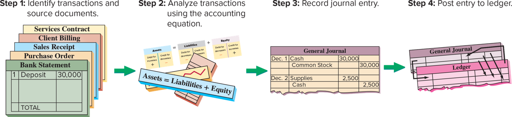
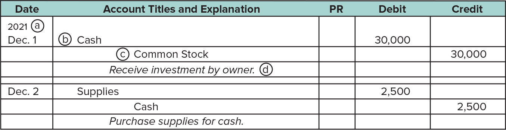
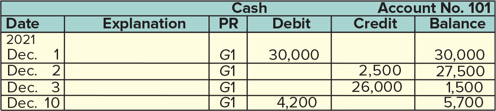
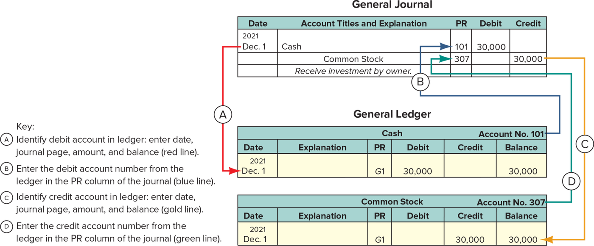
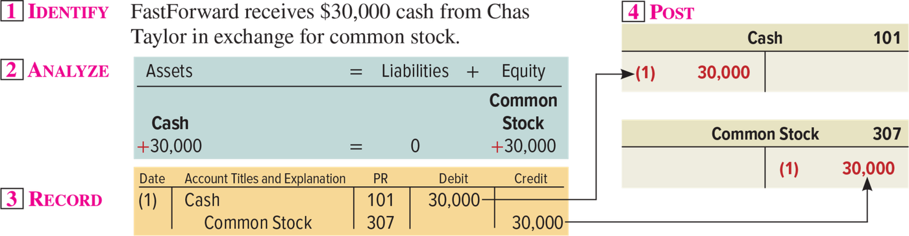
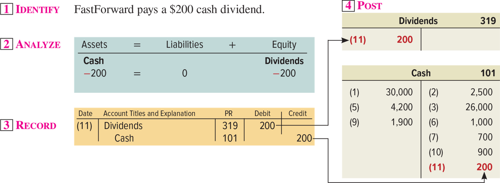
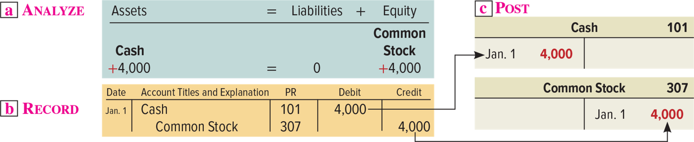
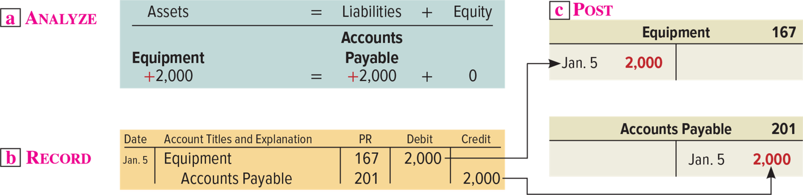
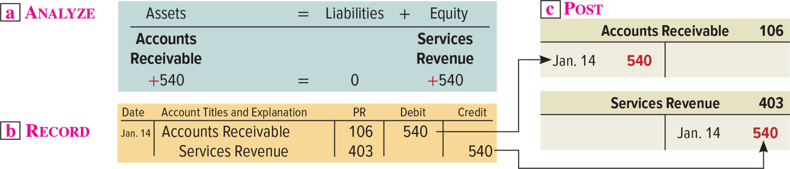

Chapter 2 — Analyzing and Processing Transactions
ACCT 203 · Principles of Financial Accounting · Chapter 2: Accounting for Business Transactions · Section 3 of 4:
Analyzing and Processing Transactions
Objective A1: Analyze and record transactions and their impact on financial statements.
This section is “from paper to book”: you analyze the transaction, write its entry in the journal, post it to the ledger, and check the equation
In the previous section you learned the rules of debits and credits on a T-account. Now we apply them to real work: every transaction goes through four steps (Exhibit 2.9) — you identify it from a source document, analyze it with the accounting equation, write its entry in the journal (journalizing), and then move it to the ledger (posting). The book walks through 16 transactions of FastForward one by one, and at the end it collects the whole ledger and checks that $42,395 = $9,200 + $33,195.
Focus from now on: the most common question from this section is “Which entry is correct?” — they give you a transaction and four entries. So learn the 16 entries as templates: if you know the template for “buy supplies on credit” or “receive cash ahead of time”, any number on the exam fits it. And keep the rules table from section 2 in front of you: assets, expenses, and dividends increase with a debit; liabilities, common stock, and revenues increase with a credit.
Every transaction moves along a line of four stations: identify → analyze → record in the journal → post to the ledger.
The book divides the processing of transactions into four steps (Exhibit 2.9). Steps 1 and 2 — transaction analysis and the accounting equation — were covered in Chapter 1. This section focuses on steps 3 and 4.
| # | Step and what you do in it |
|---|---|
| 1 | Identify transactions and source documents You find the transaction and its document: a services contract, a client bill, a sales receipt, a purchase order, a bank statement — the five in the picture. |
| 2 | Analyze transactions using the accounting equation What went up and what went down in Assets = Liabilities + Equity. |
| 3 | Record journal entry You write the entry in the journal chronologically = journalizing. |
| 4 | Post entry to ledger You move the entry from the journal to the ledger accounts = posting. |

This is Exhibit 2.9. Four panels from left to right with green arrows between them. Step 1: a stack of documents (Services Contract, Client Billing, Sales Receipt, Purchase Order, and a Bank Statement with a deposit of 30,000). Step 2: the equation Assets = Liabilities + Equity, with the increase side and the decrease side of each part. Step 3: a General Journal with FastForward's first two entries: Dec. 1 Cash 30,000 against Common Stock, and Dec. 2 Supplies 2,500 against Cash. Step 4: arrows going down from the General Journal to the Ledger. How to read it: one direction only — document → analysis → journal → ledger. What they ask: the order of the steps, or “What is step 3?”.
| Term | Definition |
|---|---|
| Journal دفتر اليومية |
A complete record of each transaction in one place. It also shows the debits and credits for each transaction. You write in it in time order. |
| Journalizing التسجيل في اليومية |
Recording transactions in a journal = step 3. |
| Posting الترحيل |
Transferring journal entry information from the journal to the ledger = step 4. |
Step 3 is to record each transaction chronologically in a journal. A journal is a complete record of each transaction in one place. It also shows debits and credits for each transaction. Recording transactions in a journal is called journalizing. Step 4 is to transfer (or post) entries from the journal to the ledger. Transferring journal entry information to the ledger is called posting.
Step 1 Identify transactions and source documents. Step 2 Analyze the transaction using the accounting equation. Step 3 Record the journal entry. Step 4 Post the entry.
- The order: the journal first, then the ledger. Posting = from the journal to the ledger — a choice that says “from the ledger to the journal” is wrong.
- The journal is in time order (chronological), not in alphabetical order and not by account number. The ledger is the one sorted by account.
- Journalizing = step 3, and posting = step 4. Analyzing the transaction with the equation (step 2) comes before writing the entry, not after it.
- The journal = a complete record of each transaction in one place, with its debits and credits. The ledger spreads one transaction over more than one account, so you see the whole transaction only in the journal.
Companies can use various journals, but every company uses a general journal, and it can record any transaction. An entry is written in four steps: ⓐ the date ⓑ the debit ⓒ the credit ⓓ the explanation.
| Step | What you do |
|---|---|
| ⓐ | Write the date of the transaction on the first line of the entry. |
| ⓑ | Write the titles of the accounts debited, then the amount in the Debit column on the same line. You take the account titles from the chart of accounts. |
| ⓒ | Write the titles of the accounts credited, then the amount in the Credit column on the same line. The titles also come from the chart of accounts, and they are indented to separate them from the debited accounts. |
| ⓓ | Write a brief explanation of the transaction on the line below the entry. |
The PR column: when you first record the transaction, the posting reference (PR) column is left blank (in a manual system). Later, when you post the entries to the ledger, you write in it the identification numbers of the ledger accounts — like 101 for Cash.

This is Exhibit 2.10: FastForward's first two entries in a general journal. The book calls it partial because it shows only part of the journal. Five columns: Date · Account Titles and Explanation · PR · Debit · Credit. The circled letters: ⓐ at 2021 Dec. 1 (the date), ⓑ at Cash with its 30,000 in Debit, ⓒ at the indented Common Stock with its 30,000 in Credit, ⓓ at the italic explanation Receive investment by owner. After an empty line: Dec. 2 Supplies 2,500 / Cash 2,500 / Purchase supplies for cash. Notice: the PR column is empty — the two entries are not posted yet. What they ask: where the credit goes (indented, under the debit), where the explanation goes (under the entry), and when PR is filled.
While companies can use various journals, every company uses a general journal. It can be used to record any transaction.
ⓐ Date the transaction on the first line of each journal entry. ⓑ Enter titles of accounts debited and then enter amounts in the Debit column on the same line. Account titles are taken from the chart of accounts. ⓒ Enter titles of accounts credited and then enter amounts in the Credit column on the same line. Account titles are from the chart of accounts and are indented to separate them from debited accounts. ⓓ Enter a brief explanation of the transaction on the line below the entry.
When a transaction is first recorded, the posting reference (PR) column is left blank (in a manual system). Later, when posting entries to the ledger, the identification numbers of the individual ledger accounts are entered in the PR column.
- Inside the entry: the debit comes first, and the credit is under it, indented. A choice that puts the credit on top or with no indent has the wrong form.
- The explanation goes under the entry (on the line below the entry), not above it and not next to the date.
- The PR column in the journal is blank when you record and filled when you post, with the ledger account numbers. A choice that says “it is filled as soon as you write the entry” is wrong.
- General journal = for any transaction. A choice that says “for cash transactions only” is wrong.
A T-account is simple and shows the idea, but real systems need more structure, so they use a balance column account: the same two columns for debit and credit + a date and an explanation + a balance after each entry.
| T-account | Balance column account | |
|---|---|---|
| Columns for debits and credits | ✓ | ✓ (here they are alike) |
| A column for the transaction date and a column for the explanation | ✗ | ✓ |
| A column with the balance of the account after each entry | ✗ | ✓ |
| Where it is used | simple, and it shows how the process works | actual accounting systems, because they need more structure |

This is Exhibit 2.11: the Cash account, number Account No. 101, with six columns:
Date · Explanation · PR · Debit · Credit · Balance. On every line the PR column says
G1 (it came from the general journal, page 1). How to read it: every line changes the
balance — a debit raises it and a credit lowers it:
Dec. 1: +30,000 → 30,000 · Dec. 2: −2,500 → 27,500 · Dec. 3: −26,000 → 1,500 · Dec. 10: +4,200 → 5,700
What they ask: they give you the lines and ask for the balance after a certain line,
or they ask what G1 means.
The book's own walk-through: the Cash account is debited on December 1 for 30,000 (the owner investment), giving a debit balance of 30,000. On December 2 it is credited for 2,500, giving 27,500. On December 3 it is credited for 26,000, and the balance is reduced to 1,500. On December 10 it is debited for 4,200, and the balance goes up to 5,700; and so on.
- The heading of the Balance column does not say whether the balance is a debit or a credit. Instead, we assume the account has a normal balance — for Cash, for example: a debit.
- Sometimes unusual events temporarily create an abnormal balance = a balance on the side where the decreases are recorded.
- The book's example: a customer might mistakenly overpay a bill. That means the customer's account in Accounts Receivable (an asset with a normal debit balance) is reduced by more than he owes, so its balance becomes a credit = abnormal.
Step 4: post the entries to the ledger accounts. All entries are posted to the ledger before the financial statements are prepared, so that the account balances are up-to-date. The rule: a debit in the entry goes in as a debit in the ledger account, and a credit goes in as a credit. The book divides the posting of one entry into four parts:
| Part | What you do | Line |
|---|---|---|
| A | Identify the ledger account debited in the entry. In the ledger, write: the entry date, the journal and page in the PR column (the letter G shows it came from the general journal), the debit amount, and the new balance. | red |
| B | Write the ledger account number in the PR column of the journal. | blue |
| C | The same as A, but for the credited account and its amount. | gold |
| D | The same as B, but for the credited account. | green |
The result: posting creates a link between the ledger and the journal entry. This link is a useful cross-reference: you can trace any amount from one record to the other.

This is Exhibit 2.12. On top: a General Journal with the Dec. 1 entry — Cash 30,000 debit and Common Stock 30,000 credit, and the PR column now holds 101 and 307. Below: a General Ledger with two balance column accounts: Cash · Account No. 101 (Dec. 1, G1, debit 30,000, balance 30,000) and Common Stock · Account No. 307 (Dec. 1, G1, credit 30,000, balance 30,000). How to read it: follow the colors — A red from the entry date to the Cash account, B blue from the number 101 to the PR column in the journal, C gold from the credit amount to the Common Stock account, D green from the number 307 to the PR column. What they ask: what is written in PR in the journal (the account number) and what is written in PR in the ledger (G1).
- The book's point: posting is automatic with accounting software.
- The book's point: the fundamental concepts of a manual system are identical to those of a computerized system.
- Analytics Insight: Blockchain, the technology used to authenticate and track Bitcoin transactions, could radically change accounting systems. It gives a ledger that is constantly verified and cannot be changed without others noticing. People with accounting knowledge are highly desired to build and audit it.
T-accounts are simple and show how the accounting process works. However, actual accounting systems need more structure and therefore use a different formatting of T-accounts, called balance column accounts. The balance column account format is similar to a T-account in having columns for debits and credits. It is different in including transaction date and explanation columns. It also has a column where the balance of the account after each entry is recorded.
The heading of the Balance column does not show whether it is a debit or credit balance. Instead, an account is assumed to have a normal balance. Unusual events can sometimes temporarily create an abnormal balance. An abnormal balance is a balance on the side where decreases are recorded.
All entries are posted to the ledger before financial statements are prepared so that account balances are up-to-date. When entries are posted to the ledger, the debits in journal entries are transferred into ledger accounts as debits, and credits are transferred into ledger accounts as credits. The posting process creates a link between the ledger and the journal entry. This link is a useful cross-reference for tracing an amount from one record to another.
- PR has two meanings depending on where it is: in the journal = the ledger account number (101), and in the ledger = the journal and page (G1). The exam swaps them.
- Abnormal balance = a balance on the decrease side — not “a zero balance” and not “a big balance”. And the book's example: a customer who overpaid.
- The Balance column does not write “debit” or “credit” — we assume the normal balance.
- Posting comes before the financial statements, not after them. And a debit is posted as a debit and a credit as a credit — there is no flipping.
- The difference between a T-account and a balance column account: the second has a date, an explanation, and a balance after each entry. Both have debit and credit.
Every transaction: Identify → Analyze → Record → Post. Transactions 1–11 are the same ones you analyzed with the equation in Chapter 1, and now you write an entry for each one and post it to a T-account.
The book uses FastForward to show how double-entry accounting is used in analyzing and processing transactions. Each transaction follows the four steps of Exhibit 2.9, and in step 4 — to keep it simple — it posts to T-accounts instead of balance column accounts. The first 11 transactions come from Chapter 1, and then there are 5 new ones (12–16). The book's advice: study each transaction before you move to the next one. The book also says it shows posting to balance column accounts (instead of T-accounts) in Need-To-Know 2-5.
| Account | Increases with | Decreases with |
|---|---|---|
| Asset | Debit | Credit |
| Liability | Credit | Debit |
| Common Stock | Credit | Debit |
| Dividends | Debit | Credit |
| Revenue | Credit | Debit |
| Expense | Debit | Credit |
The side that increases an account is also its normal balance. This is the Debit and Credit Rules table from the book's margin next to the transactions. The account numbers (the PR column) come from FastForward's chart of accounts: 101 Cash · 106 Accounts Receivable · 126 Supplies · 128 Prepaid Insurance · 167 Equipment · 201 Accounts Payable · 236 Unearned Consulting Revenue · 307 Common Stock · 319 Dividends · 403 Consulting Revenue · 406 Rental Revenue · 622 Salaries Expense · 640 Rent Expense · 690 Utilities Expense.

This is the book's layout for each of the 16 transactions, and this one is transaction (1). Four boxes numbered in pink: 1 IDENTIFY the transaction sentence, 2 ANALYZE a blue box with its effect on the equation, 3 RECORD an orange box with the entry (Date = the transaction number (1) instead of a date, and PR shows 101 and 307), and 4 POST arrows from the entry to the T-accounts on the right — the red one is the new posting. How to read it: the debit amount goes to the left side of Cash, and the credit amount goes to the right side of Common Stock. The other transactions have the same layout, so below I wrote them for you as analysis + entry.
(1) Receive Investment by Owner — FastForward receives $30,000 cash from Chas Taylor in
exchange for common stock.
Cash +30,000 = 0 + Common Stock +30,000
| Date | Account Titles and Explanation | PR | Debit | Credit |
| (1) | Cash | 101 | 30,000 | |
| Common Stock | 307 | 30,000 |
Cash is an asset that went up → debit. Common Stock (equity) went up → credit. The owner is not a creditor of the company, so liabilities did not move.
(2) Purchase Supplies for Cash — it pays $2,500 cash for supplies.
Cash −2,500, Supplies +2,500 = 0 + 0
| Date | Account Titles and Explanation | PR | Debit | Credit |
| (2) | Supplies | 126 | 2,500 | |
| Cash | 101 | 2,500 |
Supplies, an asset, went up → debit; Cash, an asset, went down → credit. One asset in place of another: the book says the composition of assets changed, not their total.
(3) Purchase Equipment for Cash — it pays $26,000 cash for equipment.
Cash −26,000, Equipment +26,000 = 0 + 0
| Date | Account Titles and Explanation | PR | Debit | Credit |
| (3) | Equipment | 167 | 26,000 | |
| Cash | 101 | 26,000 |
Equipment went up → debit; Cash went down → credit. The same template as (2): one asset swapped for another, and the total did not change.
(4) Purchase Supplies on Credit — it buys $7,100 of supplies on credit from a
supplier.
Supplies +7,100 = Accounts Payable +7,100 + 0
| Date | Account Titles and Explanation | PR | Debit | Credit |
| (4) | Supplies | 126 | 7,100 | |
| Accounts Payable | 201 | 7,100 |
Supplies went up → debit. Instead of paying, the company now owes the supplier → Accounts Payable (a liability) went up → credit. Cash did not move at all.
(5) Provide Services for Cash — it provides consulting services and collects
$4,200 cash right away.
Cash +4,200 = 0 + Consulting Revenue +4,200
| Date | Account Titles and Explanation | PR | Debit | Credit |
| (5) | Cash | 101 | 4,200 | |
| Consulting Revenue | 403 | 4,200 |
Cash went up → debit. Consulting Revenue went up, and revenue increases equity, so it increases with a credit → credit.
(6) Payment of Expense in Cash — it pays $1,000 cash for December's
rent.
Cash −1,000 = 0 + Rent Expense −1,000
| Date | Account Titles and Explanation | PR | Debit | Credit |
| (6) | Rent Expense | 640 | 1,000 | |
| Cash | 101 | 1,000 |
The Rent Expense account itself went up, and an expense increases with a debit because it reduces equity → debit. Cash went down → credit.
(7) Payment of Expense in Cash — it pays $700 cash for an
employee's salary.
Cash −700 = 0 + Salaries Expense −700
| Date | Account Titles and Explanation | PR | Debit | Credit |
| (7) | Salaries Expense | 622 | 700 | |
| Cash | 101 | 700 |
Salaries Expense went up → debit; Cash went down → credit. The same template as rent. The book's point: a salary usually means compensation of a fixed amount for a given time period, and wages is pay based on time worked.
(8) Provide Consulting and Rental Services on Credit — it provides consulting services of
$1,600 and rents its test
facilities for $300, and the customer is
billed
$1,900.
Accounts Receivable +1,900 = 0 + Consulting Revenue +1,600, Rental Revenue +300
| Date | Account Titles and Explanation | PR | Debit | Credit |
| (8) | Accounts Receivable | 106 | 1,900 | |
| Consulting Revenue | 403 | 1,600 | ||
| Rental Revenue | 406 | 300 |
Accounts Receivable (an asset) went up by the total → debit 1,900. The two revenues went up → credit 1,600 + 300 = 1,900. Three accounts in one entry = a compound journal entry — an entry that affects three or more accounts. And the revenue is recorded now, even though the money has not arrived, because the book says: revenue is recognized when the services are provided, not necessarily when the customer pays.
![Transaction 8: FastForward provides consulting services of 1,600 dollars and rents its test facilities for 300 dollars and bills the customer 1,900 dollars; analysis Accounts Receivable plus 1,900 equals 0 plus Consulting Revenue plus 1,600 and Rental Revenue plus 300; journal entry (8) Accounts Receivable 106 debit 1,900, Consulting Revenue 403 credit 1,600, Rental Revenue 406 credit 300; posted to the Accounts Receivable 106 T-account, the Consulting Revenue 403 T-account which already holds (5) 4,200, and the Rental Revenue 406 T-account](../img/acct203/ch02-wil28773_need_to_kno020209.png)
Transaction (8) in the book's layout: the entry has one debit line and two credit lines, and three posting arrows to three T-accounts. Look at Consulting Revenue 403: it already holds (5) 4,200 from transaction 5, and (8) 1,600 is added under it in red. What they ask: “Which entry is correct?” for a transaction with two kinds of service on one bill — the one debit amount = the total of the credits.
(9) Receipt of Cash from Accounts Receivable — it receives $1,900 cash from the customer who was
billed in transaction 8.
Cash +1,900, Accounts Receivable −1,900 = 0 + 0
| Date | Account Titles and Explanation | PR | Debit | Credit |
| (9) | Cash | 101 | 1,900 | |
| Accounts Receivable | 106 | 1,900 |
Cash went up → debit, and Accounts Receivable went down → credit. One asset in place of another — not new revenue; the revenue was recorded in (8).
(10) Partial Payment of Accounts Payable — it pays $900 cash toward the
debt from transaction 4.
Cash −900 = Accounts Payable −900 + 0
| Date | Account Titles and Explanation | PR | Debit | Credit |
| (10) | Accounts Payable | 201 | 900 | |
| Cash | 101 | 900 |
Accounts Payable (a liability) went down → debit, and Cash went down → credit. Both sides went down 900, so the equation stays balanced — and there is no expense.
(11) Payment of Cash Dividend — it pays a $200 cash dividend.
Cash −200 = 0 + Dividends −200
| Date | Account Titles and Explanation | PR | Debit | Credit |
| (11) | Dividends | 319 | 200 | |
| Cash | 101 | 200 |
The Dividends account went up — and dividends increase with a debit because they reduce equity → debit. Cash went down → credit. The book's point: dividends always decrease equity.

Transaction (11): in the analysis box, Dividends shows −200 under Equity (equity went down), but in the entry Dividends is a debit of 200 (the Dividends account itself went up). On the right is the Cash 101 account after 11 transactions: the debits (1) 30,000 · (5) 4,200 · (9) 1,900, and the credits (2) 2,500 · (3) 26,000 · (6) 1,000 · (7) 700 · (10) 900 · (11) 200. What they ask: the dividend entry — debit Dividends, not debit Common Stock and not debit an expense.
We use FastForward to show how double-entry accounting is used in analyzing and processing transactions. Analysis of each transaction follows the four steps of Exhibit 2.9.
Salary usually refers to compensation of a fixed amount for a given time period. Wages is compensation based on time worked.
Revenue is recognized when products and services are provided, not necessarily when the customer pays.
Transaction 8 is a compound journal entry, which is an entry that affects three or more accounts.
Dividends always decrease equity.
- Buying supplies (2, 4) = the asset Supplies is debited — not an expense. And buying on credit (4) = credit Accounts Payable, not credit Cash.
- Collecting a receivable (9) is not revenue — the revenue was recorded in (8). A choice that debits Cash and credits Revenue for a collection records the revenue twice.
- Paying a debt (10) = debit Accounts Payable, credit Cash — there is no expense.
- In the analysis box, expenses and dividends are written with a minus (−1,000) because they reduce equity, but in the entry their account is a debit because the account itself went up. Do not mix up the effect on the equation with the side of the entry.
- Dividends is a debit and reduces equity, but it is not an expense and it is not on the income statement.
- The book vs. the doctor's handouts: the book uses a corporation, so it uses Common Stock, Dividends, and Retained Earnings. Some class handouts use a sole proprietorship: Owner's Capital and Owner's Withdrawals (or Drawing). It is the same idea in a different business form, with the same debit and credit rules: an owner investment = debit Cash, credit Owner's Capital (in place of Common Stock); an owner withdrawal = debit Withdrawals, credit Cash (in place of Dividends).
Transactions 12–16 are new in Chapter 2. The most important: (12) cash received early = a liability, not revenue, and (13) insurance paid early = an asset, not an expense. After all 16, the ledger proves: $42,395 = $9,200 + $33,195.
(12) Receipt of Cash for Future Services — it receives $3,000 cash
in advance of providing
consulting services to a customer.
Cash +3,000 = Unearned Consulting Revenue +3,000 + 0
| Date | Account Titles and Explanation | PR | Debit | Credit |
| (12) | Cash | 101 | 3,000 | |
| Unearned Consulting Revenue | 236 | 3,000 |
Cash went up → debit. And now the company must provide a service in the future → Unearned Consulting Revenue (unearned revenue = a liability) went up → credit. The book's point: “Unearned” accounts are liabilities that must be fulfilled.
![Transaction 12: FastForward receives 3,000 dollars cash in advance of providing consulting services to a customer; analysis Cash plus 3,000 equals Unearned Consulting Revenue plus 3,000 plus 0; note that accepting the cash requires FastForward to perform future services and is a liability, and no revenue is recorded until services are provided; journal entry (12) Cash 101 debit 3,000 and Unearned Consulting Revenue 236 credit 3,000; posted to the Cash 101 and Unearned Consulting Revenue 236 T-accounts](../img/acct203/ch02-wil28773_ch0201ad.png)
Transaction (12). Under the analysis box is the book's important sentence: accepting $3,000 requires FastForward to perform future services, so it is a liability, and no revenue is recorded until services are provided. The amount is posted to the debit side of Cash 101 (now holding (12) 3,000) and to the credit side of Unearned Consulting Revenue 236. What they ask: “a customer paid in advance” — the answer is credit Unearned Revenue, and the trap is credit Revenue.
(13) Pay Cash for Future Insurance Coverage — it pays $2,400 cash (insurance
premium) for a
24-month insurance policy, and
coverage begins on
December 1.
Cash −2,400, Prepaid Insurance +2,400 = 0 + 0
| Date | Account Titles and Explanation | PR | Debit | Credit |
| (13) | Prepaid Insurance | 128 | 2,400 | |
| Cash | 101 | 2,400 |
Prepaid Insurance (a prepaid expense = an asset) went up → debit, and Cash went down → credit. One asset swapped for another.

Transaction (13). The book's sentence under the analysis: it changes the composition of assets from cash to prepaid insurance, and expense is recorded as insurance coverage expires — and that is exactly the topic of adjustments in Chapter 3. What they ask: “paid insurance for two years” — the answer is debit Prepaid Insurance, and the trap is debit Insurance Expense.
(14) Purchase Supplies for Cash — it pays $120 cash for supplies.
Cash −120, Supplies +120 = 0 + 0
| Date | Account Titles and Explanation | PR | Debit | Credit |
| (14) | Supplies | 126 | 120 | |
| Cash | 101 | 120 |
Supplies went up → debit, and Cash went down → credit. The same template as (2), just a smaller number.
(15) Payment of Expense in Cash — it pays $305 cash for December
utilities.
Cash −305 = 0 + Utilities Expense −305
| Date | Account Titles and Explanation | PR | Debit | Credit |
| (15) | Utilities Expense | 690 | 305 | |
| Cash | 101 | 305 |
Utilities Expense went up → debit, and Cash went down → credit.
(16) Payment of Expense in Cash — it pays $700 cash for an employee's salary for work in the
last part of December.
Cash −700 = 0 + Salaries Expense −700
| Date | Account Titles and Explanation | PR | Debit | Credit |
| (16) | Salaries Expense | 622 | 700 | |
| Cash | 101 | 700 |
Salaries Expense went up → debit, and Cash went down → credit. This is the second salary, so the salaries balance becomes 700 + 700 = 1,400.
Exhibit 2.13 shows FastForward's ledger accounts (in T-account form) after all 16 transactions are recorded and posted and the balances computed. The accounts are grouped into three columns that follow the equation: assets, liabilities, and equity.
![Exhibit 2.13 — General ledger for FastForward in T-account form, in three columns headed Assets = Liabilities + Equity: Cash 101 balance 4,275, Accounts Receivable 106 balance 0, Supplies 126 balance 9,720, Prepaid Insurance 128 2,400 and Equipment 167 26,000; Accounts Payable 201 balance 6,200 and Unearned Consulting Revenue 236 3,000; Common Stock 307 30,000, Dividends 319 200, and in a white area marked as income statement accounts Consulting Revenue 403 balance 5,800, Rental Revenue 406 300, Salaries Expense 622 balance 1,400, Rent Expense 640 1,000 and Utilities Expense 690 305; totals 42,395 = 9,200 + 33,195](../img/acct203/exhibit-2-13.png)
This is Exhibit 2.13. On top, a green band: General Ledger and Assets = Liabilities + Equity. Left column (assets): Cash 101 (balance 4,275), Accounts Receivable 106 (balance 0), Supplies 126 (9,720), Prepaid Insurance 128 (2,400), Equipment 167 (26,000). Middle (liabilities): Accounts Payable 201 (6,200), Unearned Consulting Revenue 236 (3,000). Right (equity): Common Stock 307 and Dividends 319, and under them a white area with the revenues and expenses and the words: Accounts in this white area are on the income statement. At the bottom: $42,395 = $9,200 + $33,195. How to read it: each number in brackets = the transaction number, and the balance is under the line; in accounts with only one entry, the bold amount itself is the balance. What they ask: the balance of a certain account (especially Cash), or “Which accounts appear on the income statement?” — only the ones in the white area, and Dividends is not one of them.
The Cash account — the longest account, so keep it in front of you as a T-account:
| Cash · 101 | |
|---|---|
| Debit | Credit |
| (1) 30,000 | (2) 2,500 |
| (5) 4,200 | (3) 26,000 |
| (9) 1,900 | (6) 1,000 |
| (12) 3,000 | (7) 700 |
| (10) 900 | |
| (11) 200 | |
| (13) 2,400 | |
| (14) 120 | |
| (15) 305 | |
| (16) 700 | |
| Balance 4,275 | |
Total debits 30,000 + 4,200 + 1,900 + 3,000 = 39,100, and total credits 2,500 + 26,000 + 1,000 + 700 + 900 + 200 + 2,400 + 120 + 305 + 700 = 34,825, so the balance is 39,100 − 34,825 = 4,275 debit (the normal balance for cash).
And the other accounts — where each balance came from:
| Account, and how its balance is worked out | Balance |
|---|---|
| Assets | |
| Cash 39,100 − 34,825 | 4,275 |
| Accounts Receivable (8) 1,900 − (9) 1,900 | 0 |
| Supplies (2) 2,500 + (4) 7,100 + (14) 120 | 9,720 |
| Prepaid Insurance (13) 2,400 | 2,400 |
| Equipment (3) 26,000 | 26,000 |
| Liabilities | |
| Accounts Payable (4) 7,100 − (10) 900 | 6,200 |
| Unearned Consulting Revenue (12) 3,000 | 3,000 |
| Equity | |
| Common Stock (1) 30,000 | 30,000 |
| Dividends (11) 200 | 200 |
| Consulting Revenue (5) 4,200 + (8) 1,600 | 5,800 |
| Rental Revenue (8) 300 | 300 |
| Salaries Expense (7) 700 + (16) 700 | 1,400 |
| Rent Expense (6) 1,000 | 1,000 |
| Utilities Expense (15) 305 | 305 |
The red numbers are subtracted from equity (dividends and expenses).
The three totals obey the equation (the book's numbers):
- Assets $42,395 ($4,275 + $0 + $9,720 + $2,400 + $26,000)
- Liabilities $9,200 ($6,200 + $3,000)
- Equity $33,195 ($30,000 − $200 + $5,800 + $300 − $1,400 − $1,000 − $305)
- The common stock, dividends, revenue, and expense accounts reflect the transactions that change equity.
- The balances of revenues and expenses are reported in the income statement — that is the topic of section 4.
Tata Company began operations on January 1 and completed these transactions. For each transaction: (a) analyze it with the equation, (b) record the journal entry, (c) post it to T-accounts. Try it yourself before you open the solution.
| Date | Transaction |
|---|---|
| Jan. 1 | Jamsetji Tata invested $4,000 cash in the Tata Company in exchange for common stock. |
| Jan. 5 | Tata Company purchased $2,000 of equipment on credit. |
| Jan. 14 | Tata Company provided $540 of services for a client on credit. |
Solution
Jan. 1 — Receive Investment by Owner
Cash +4,000 = 0 + Common Stock +4,000
| Date | Account Titles and Explanation | PR | Debit | Credit |
| Jan. 1 | Cash | 101 | 4,000 | |
| Common Stock | 307 | 4,000 |
The same template as FastForward's transaction (1): Cash went up → debit, Common Stock went up → credit.

The solution in the book's layout: a ANALYZE → b RECORD → c POST. Notice that the Date column here has a real date (Jan. 1) instead of a transaction number, and the posting in the T-account is written with the date.
Jan. 5 — Purchase Equipment on Credit
Equipment +2,000 = Accounts Payable +2,000 + 0
| Date | Account Titles and Explanation | PR | Debit | Credit |
| Jan. 5 | Equipment | 167 | 2,000 | |
| Accounts Payable | 201 | 2,000 |
Equipment, an asset, went up → debit. On credit = a debt → Accounts Payable went up → credit. The same template as transaction (4), but equipment instead of supplies.

Assets and liabilities both went up 2,000, equity is 0 — and Cash did not move.
Jan. 14 — Provide Services on Credit
Accounts Receivable +540 = 0 + Services Revenue +540
| Date | Account Titles and Explanation | PR | Debit | Credit |
| Jan. 14 | Accounts Receivable | 106 | 540 | |
| Services Revenue | 403 | 540 |
Accounts Receivable went up → debit, and revenue went up → credit. The revenue is recorded now because the service was provided, even if the money has not arrived.

Watch the account name: here it is Services Revenue (number 403), and in FastForward it was Consulting Revenue with the same number — the same type (revenue) with a different name.
“Unearned” accounts are liabilities that must be fulfilled.
Exhibit 2.13 shows the ledger accounts (in T-account form) of FastForward after all 16 transactions are recorded and posted and the balances computed. The accounts are grouped into three columns following the accounting equation: assets, liabilities, and equity.
Assets equal $42,395 ($4,275 + $0 + $9,720 + $2,400 + $26,000). Liabilities equal $9,200 ($6,200 + $3,000). Equity equals $33,195 ($30,000 − $200 + $5,800 + $300 − $1,400 − $1,000 − $305). The accounting equation is: $42,395 = $9,200 + $33,195.
Common stock, dividends, revenue, and expense accounts reflect transactions that change equity. Revenue and expense account balances are reported in the income statement.
- (12) cash received early from a customer = credit Unearned Consulting Revenue (a liability) — not Consulting Revenue. There is no revenue until the service is provided.
- (13) insurance paid for 24 months = debit Prepaid Insurance (an asset) — not an expense. The expense is recorded as the coverage expires (Chapter 3).
- In equity, dividends and expenses are subtracted. If you add them to the rest, the equation will not balance.
- Accounts Receivable has a zero balance after (9) — but it stays on the list of assets and enters the sum as $0.
- Salaries Expense = 1,400 (two salaries: 7 and 16), not 700. And Consulting Revenue = 5,800 (5 and 8), not 4,200.
- The income statement = revenues and expenses only (the white area in Exhibit 2.13). Dividends and Common Stock change equity but they are not on the income statement.
Test yourself
The questions are in English because the exam is in English. Answer first, then open the solution. If you miss question 2 or 3, go back to the entry templates in concepts 4 and 5; if you miss question 4, go back to the posting parts A–D.
- $5,300 debit balance
- $24,300 debit balance
- $8,800 debit balance
- $5,300 credit balance
Answer
A. Walk line by line, like Exhibit 2.11: 12,000 − 3,500 = 8,500 → 8,500 − 6,000 = 2,500 → 2,500 + 2,800 = 5,300. The debits (14,800) are bigger than the credits (9,500), so the balance is a debit = the normal balance for cash. The trap in B: it adds all the numbers as if they were all increases. C forgot the 3,500 credit. And D has the right number but the wrong side — a credit balance in Cash would be an abnormal balance.
- Debit Cash $4,500; credit Consulting Revenue $4,500
- Debit Unearned Consulting Revenue $4,500; credit Cash $4,500
- Debit Cash $4,500; credit Unearned Consulting Revenue $4,500
- Debit Accounts Receivable $4,500; credit Consulting Revenue $4,500
Answer
C. The same template as transaction (12): Cash went up → debit, and the company now must provide a service → Unearned Consulting Revenue (a liability) went up → credit. The trap in A: it records revenue before the service is provided — and the book says there is no revenue until services are provided. B is reversed (as if cash went out). And D is the “services on credit” template — but here the customer paid and the service was not provided yet.
- Debit Cash $2,750; credit Consulting Revenue $2,300; credit Rental Revenue $450
- Debit Accounts Receivable $2,300; credit Consulting Revenue $2,300
- Debit Consulting Revenue $2,300; debit Rental Revenue $450; credit Accounts Receivable $2,750
- Debit Accounts Receivable $2,750; credit Consulting Revenue $2,300; credit Rental Revenue $450
Answer
D. The same template as transaction (8) — a compound entry: debit Accounts Receivable for the total 2,300 + 450 = 2,750, and credit each revenue with its own amount. The trap in A: “billed” means a bill on credit, not cash. B forgot the rental revenue, so the entry is incomplete. And C is fully reversed — as if it cancels revenue.
- When the transaction is first journalized
- When the entry is posted to the ledger
- When the trial balance is prepared
- Never; the journal's PR column shows the journal page, such as G1
Answer
B. The book says: the PR column is left blank when the transaction is first recorded, and at posting you enter the ledger account numbers in it (parts B and D in Exhibit 2.12). The trap in A: that is the time of recording, and the column is still blank. D is the most dangerous trap: G1 is written in the PR column of the ledger, not of the journal. And in C, the trial balance comes after posting anyway.
- $56,500
- $43,500
- $41,500
- $39,000
Answer
C. The same method as the book in Exhibit 2.13: 40,000 − 1,000 + 9,000 − 6,500 = 41,500. The trap in B: it adds dividends instead of subtracting them (40,000 + 1,000 + 9,000 − 6,500). A adds everything. And D forgot the revenues and expenses (40,000 − 1,000) — even though they are accounts that change equity.
Key terms from this section
| Term | What it means | Watch out for |
|---|---|---|
| Steps in processing transactions | The four steps every transaction goes through | four: identify → analyze → record → post |
| Source documents | The papers that show a transaction happened (step 1) | contract, bill, receipt, purchase order, bank statement |
| Journal | A complete record of each transaction in one place, with its debits and credits | in time order, not by account |
| Journalizing | Recording transactions in a journal | = step 3 |
| General journal | The journal every company uses | every company, any transaction |
| Posting | Transferring journal entry information to the ledger | = step 4 · from the journal to the ledger · before the financial statements |
| Posting reference (PR) column | The column that links the journal and the ledger | in the journal: blank when you record → account number when you post · in the ledger: G1 |
| Balance column account | The ledger account format real systems use | like a T-account + date, explanation, and a balance after each entry |
| Normal balance | The side where an account increases | the Balance column does not say debit or credit — we assume the normal one |
| Abnormal balance | A balance on the side where decreases are recorded | on the decrease side · example: a customer overpays a bill |
| Cross-reference | The link posting creates between the ledger and the journal entry | lets you trace an amount from one record to another |
| Compound journal entry | An entry that affects three or more accounts | three accounts or more · transaction (8) |
| Revenue recognition | When revenue is recorded | when the service is provided, not necessarily when the customer pays |
| Salary / wages | Pay for work | salary = a fixed amount for a period · wages = based on time worked |
| Unearned Consulting Revenue | Cash received before the service is provided | a liability that must be fulfilled · transaction (12) · not revenue |
| Prepaid Insurance | Insurance paid before the coverage is used | an asset · transaction (13) · the expense comes as the coverage expires |
| Dividends | Cash paid out to the shareholders | a debit · always decrease equity · not an expense |
| Ledger (in T-account form) | All the accounts after the 16 transactions (Exhibit 2.13) | three columns · $42,395 = $9,200 + $33,195 |
| Blockchain | A new type of ledger technology | constantly verified, and cannot be changed without others noticing |
| Owner's Capital / Owner's Withdrawals | The sole proprietorship names for Common Stock / Dividends | the same debit and credit rules |
Vocabulary from this lesson
These are the general English words on this page, not the accounting terms. Learn them and the textbook gets much easier to read.
| Word | Part of speech | العربية | Example sentence from this lesson |
|---|---|---|---|
| assume | verb | يفترضيعني تعتبر الشي صح بدون ما أحد يقوله لك صراحة | Instead, an account is assumed to have a normal balance. |
| authenticate | verb | يوثّق / يتحقق من صحةيعني تتأكد إن الشي حقيقي وصحيح مو مزوّر | Blockchain, the technology used to authenticate and track Bitcoin transactions, could radically change accounting systems. |
| bill | verb | يرسل فاتورة لـيعني تطالب العميل بالفلوس بفاتورة، وهو يدفع بعدين | It provides consulting services of $1,600 and rents its test facilities for $300, and the customer is billed $1,900. |
| brief | adjective | مختصريعني قصير وما فيه تفاصيل كثيرة | Enter a brief explanation of the transaction on the line below the entry. |
| chronologically | adverb | بترتيب زمنييعني حسب وقت ما صار الشي: الأقدم أول وبعده الأحدث | Step 3 is to record each transaction chronologically in a journal. |
| compensation | noun | تعويض / أجريعني الفلوس اللي ياخذها الموظف مقابل شغله | Salary usually refers to compensation of a fixed amount for a given time period. |
| composition | noun | تركيبةيعني من وش يتكوّن الشي، وش الأجزاء اللي فيه | The book says the composition of assets changed, not their total. |
| constantly | adverb | باستمراريعني طول الوقت بدون توقف | It gives a ledger that is constantly verified and cannot be changed without others noticing. |
| coverage | noun | تغطيةيعني الحماية اللي يعطيك إياها التأمين خلال مدة معيّنة | It pays $2,400 cash (insurance premium) for a 24-month insurance policy, and coverage begins on December 1. |
| expire | verb | ينتهي (مدته)يعني توصل مدته للآخر وما عاد يشتغل، زي البطاقة لما ينتهي تاريخها | The expense is recorded as the coverage expires. |
| fulfill | verb | يوفي بـ / ينفّذيعني تسوي اللي وعدت فيه وتخلّص التزامك | “Unearned” accounts are liabilities that must be fulfilled. |
| in advance | phrase | مقدّماًيعني قبل الوقت، تدفع أو تستلم قبل ما يصير الشي | It receives $3,000 cash in advance of providing consulting services to a customer. |
| indent | verb | يزيح السطر لجوّايعني تبدأ الكتابة أبعد شوي عن بداية السطر | Account titles are from the chart of accounts and are indented to separate them from debited accounts. |
| mistakenly | adverb | بالغلطيعني بدون قصد، غلط منه | The book's example: a customer might mistakenly overpay a bill. |
| obey | verb | يطيع / يلتزم بـيعني يمشي على القاعدة وما يطلع عنها | The three totals obey the equation. |
| overpay | verb | يدفع زيادةيعني تدفع أكثر من المبلغ المطلوب منك | The book's example: a customer might mistakenly overpay a bill. |
| partial | adjective | جزئييعني جزء من الشي، مو كله | The book calls it partial because it shows only part of the journal. |
| premium | noun | قسط (تأمين)يعني المبلغ اللي تدفعه لشركة التأمين عشان تغطيك | It pays $2,400 cash (insurance premium) for a 24-month insurance policy. |
| radically | adverb | جذرياًيعني يغيّر الشي من أساسه، تغيير كبير مو بسيط | Blockchain, the technology used to authenticate and track Bitcoin transactions, could radically change accounting systems. |
| reflect | verb | يعكس / يبيّنيعني يوريك صورة الشي زي المراية، يبيّن وش صار | Common stock, dividends, revenue, and expense accounts reflect transactions that change equity. |
| structure | noun | تنظيم / هيكليعني ترتيب واضح للأجزاء، كل شي في مكانه | However, actual accounting systems need more structure and therefore use a different formatting of T-accounts, called balance column accounts. |
| temporarily | adverb | مؤقتاًيعني لفترة قصيرة بس، مو على طول | Unusual events can sometimes temporarily create an abnormal balance. |
| trace | verb | يتتبّعيعني تمشي ورا الشي خطوة خطوة لين توصل لأصله | You can trace any amount from one record to the other. |
| transfer | verb | ينقليعني تاخذ الشي من مكان وتحطه في مكان ثاني | Transferring journal entry information to the ledger is called posting. |
| up-to-date | adjective | محدّثيعني فيه آخر المعلومات، مو قديم | All entries are posted to the ledger before financial statements are prepared so that account balances are up-to-date. |
Built from the text of the textbook Financial Accounting Fundamentals, 8th edition
(Wild, McGraw Hill) — Chapter 2: Accounting for Business Transactions, part Analyzing and Processing Transactions
(Journalizing and Posting Transactions · Processing Transactions—An Example ·
Summarizing Transactions in a Ledger · Need-To-Know 2-3), objective A1 (pages 50–58).
Summarized only: the Analytics Insight box about blockchain (one line in
concept 3). The book's pictures of transactions 2–7, 9–10, and 14–16 are written here as analysis + entry instead of pictures, with
the same numbers. The trial balance and the financial statements are in section 4.